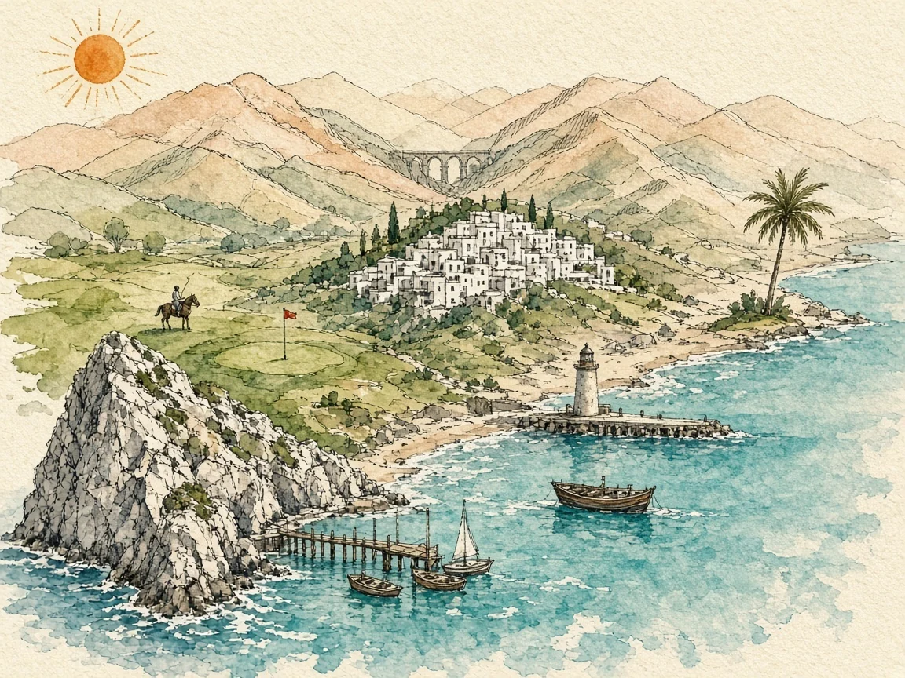
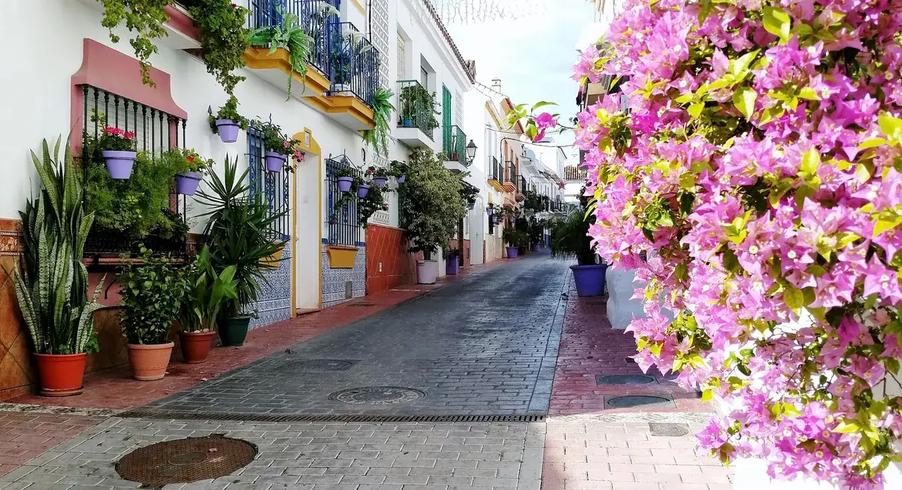
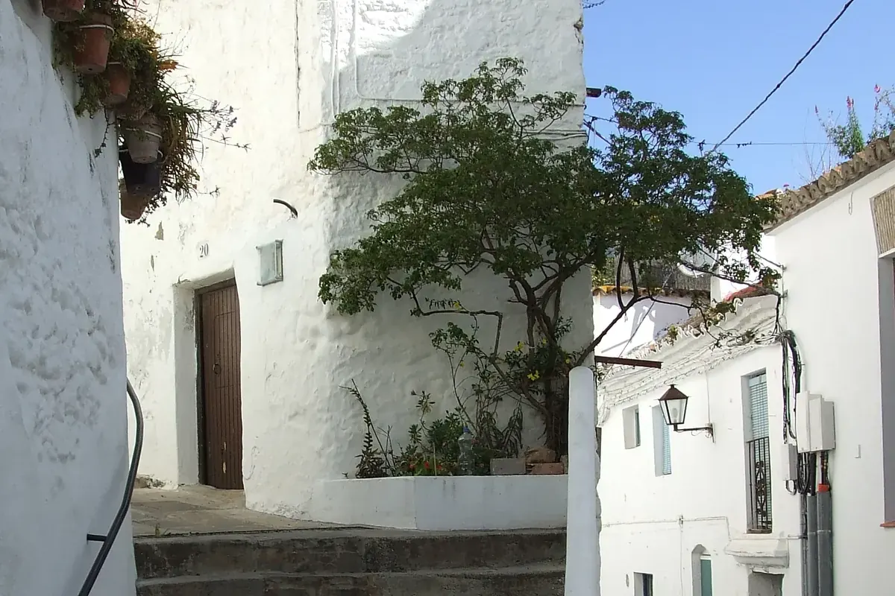
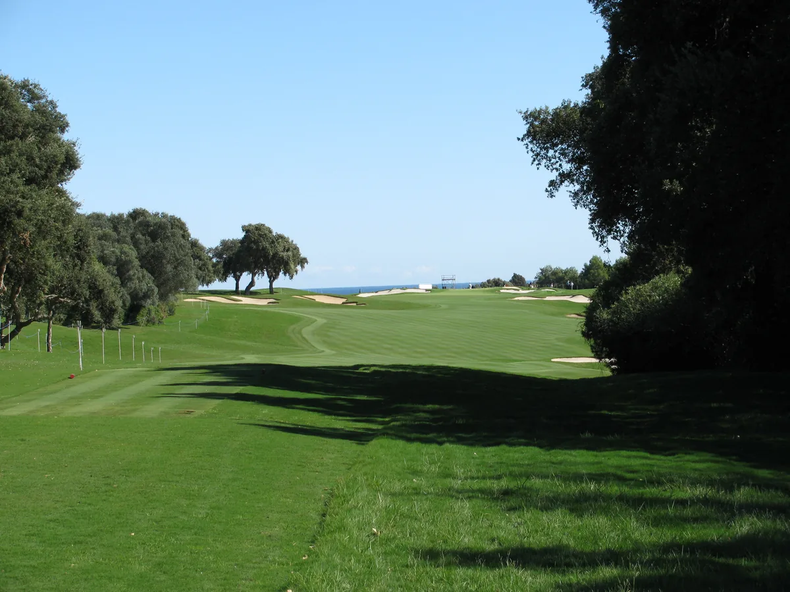
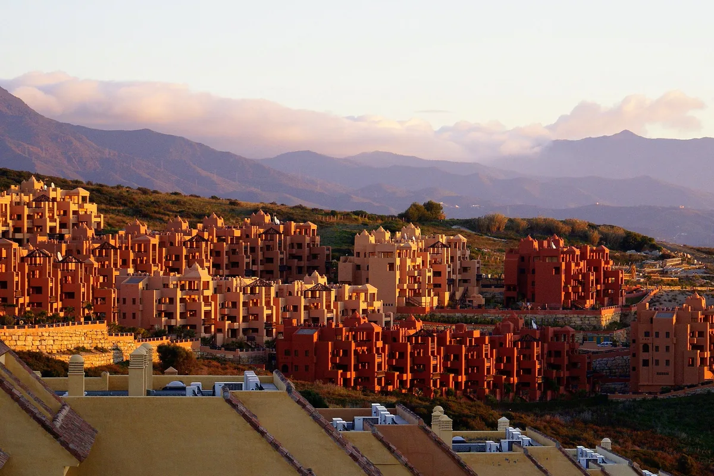
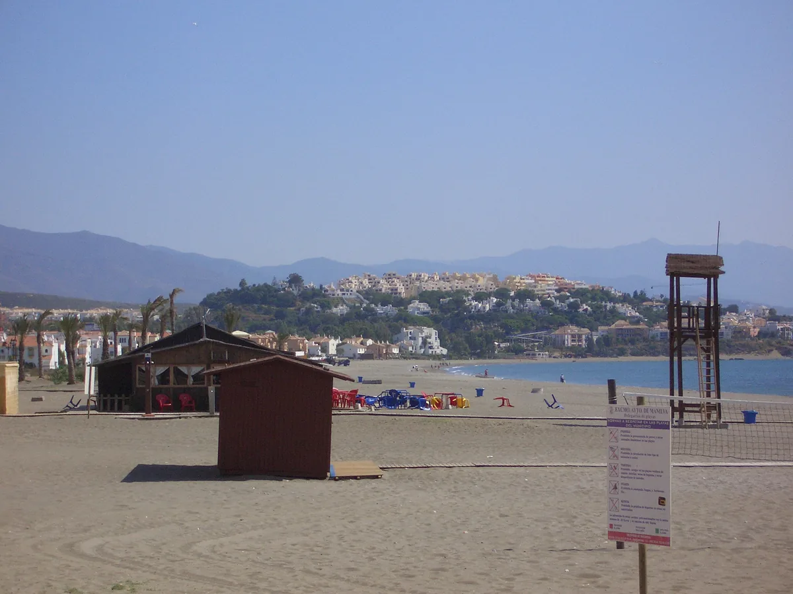

The area
From the boulevard to the polo fields
The seven towns, from the boulevard to the polo fields, are set out below. Each one has a short description and a snapshot of what is for sale now.
San Pedro de Alcántara · Estepona · Casares · Manilva · Sotogrande
Westersol helps you find a home between San Pedro de Alcántara and Sotogrande. You tell us what you want. We look at it carefully, then introduce you to one local agency we have checked. The agency does the viewings and the talking on price. You pay us no agency fee.

This coast is not one market. San Pedro feels like a proper town, with a long beach boulevard. Estepona has an old centre and a working port. Further west the villages climb the hill, with a view towards Gibraltar and, on a clear day, Africa. Each place has its own pace and its own prices. This is the start of the guide.
The seven towns, from the boulevard to the polo fields, are set out below. Each one has a short description and a snapshot of what is for sale now.
On a resale home in Andalusia you pay 7 percent transfer tax (ITP). On a typical new home that is 10 percent VAT plus 1.2 percent stamp duty (AJD), 11.2 percent together. On top come notary, land registry and usually a lawyer — items without a fixed statutory percentage. The often-quoted band of about 10 to 13 percent extra is a direction of travel, not a quote. The buying guide sets out the sources.
First a NIE and a lawyer who works for you, not for the seller. Then a reservation, the arras contract, due diligence and the escritura at the notary. A purchase often takes months. That is why we ask about your timing: within twelve months, or later.
Read the full buying guide Town guides








A snapshot of homes for sale in each of the seven towns, taken from Idealista on 15 November 2026. These are not listings on this site.

San Pedro de Alcántara has a long beach boulevard and a centre that still feels local, with Guadalmina next door.
1,079 homes for sale (Idealista, 15 November 2026).
Example prices on that date were between 395,000 euros and 1,395,000 euros.

Estepona is the old town, the port and, behind it, the Sierra Bermeja.
5,580 homes for sale (Idealista, 15 November 2026).
Example prices on that date were between 269,000 euros and 1,395,000 euros.

Casares sits up the hill, a white village, with golf and sea views on the coast below.
809 homes for sale (Idealista, 15 November 2026).
Example prices on that date were between 330,000 euros and 775,000 euros.

Manilva is an everyday town with a seafront promenade.
98 homes for sale in the town itself, not the wider municipality (Idealista, 15 November 2026).
Example prices on that date were between 250,000 euros and 750,000 euros.

Sabinillas is an everyday town with a seafront promenade.
149 homes for sale (Idealista, 15 November 2026).
Example prices on that date were between 220,000 euros and 1,100,000 euros.

La Duquesa turns around its marina.
235 homes for sale in La Duquesa and Puerto de la Duquesa together (Idealista, 15 November 2026).
Example prices on that date were between 275,000 euros and 699,000 euros.

Sotogrande is polo, golf, the marina and the gated estates, with Alcaidesa beside it.
879 homes for sale (Idealista, 15 November 2026).
Example prices on that date were between 279,000 euros and 1,350,000 euros.
Indicative, based on public listings on 15 Nov 2026.
These are examples of the kinds of new-build homes you can find between San Pedro de Alcántara and Sotogrande. They are not listings. Westersol has no partnership with any project, and we do not sell off-plan ourselves.
New apartment buildings a short walk from the boulevard and the sand, close to the town centre.

Frontline and second-line apartment buildings on the coast between San Pedro and Estepona town.

Townhouses and villas above Estepona, many with a view of the sea and the Sierra Bermeja.
Apartments around the golf courses on the Casares coast, including the area around Finca Cortesin.

Homes with a view of the marina, and new apartments a few minutes from the port.

New villas and apartments in the estates, near the golf, the polo fields and the marina.
After the intake, the partner agency can show you the projects that are actually for sale at that moment.

We are a guide and an introduction, not an estate agency and not a party to the negotiation.
Budget, timing, area, type of home, and whether you are buying in cash or with a mortgage.
We get in touch in English, Dutch or French and follow up where needed.
With your consent, we introduce you to one local agency, in writing, before any contact is made.
Viewings, offers and negotiation sit with the partner. We follow the file through to the deed.
The story below is an example of the process. It is not about a real client.
A couple from Utrecht want a townhouse close to Estepona's old town. They fill in the form with their budget, their timing and the area they have in mind.
Westersol writes back, checks those points, and asks if they agree to be introduced to one local agency. Once they say yes, the introduction goes out in writing. From then on the agency arranges the viewings and handles the negotiation.
This section stays empty until a real buyer agrees in writing that we may use their words here.
For non-resident buyers from the UK, the Netherlands and Belgium who are looking for a second home between San Pedro de Alcántara and Sotogrande, with a budget from around €300,000 and a horizon of twelve months or less. If you are still exploring, you are welcome to fill in the form; those requests are treated as information, not as an immediate introduction.

A short form. We will reply in English, Dutch or French. We use your details only to handle your request and, only with your later consent, to pass them to a partner agency.
